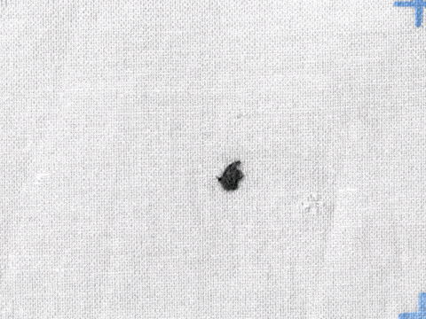
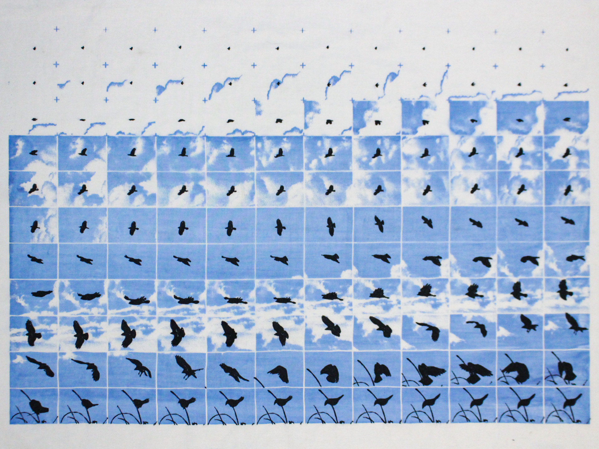
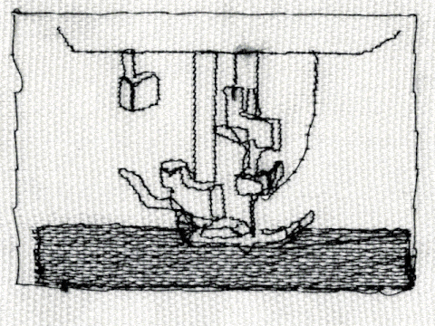
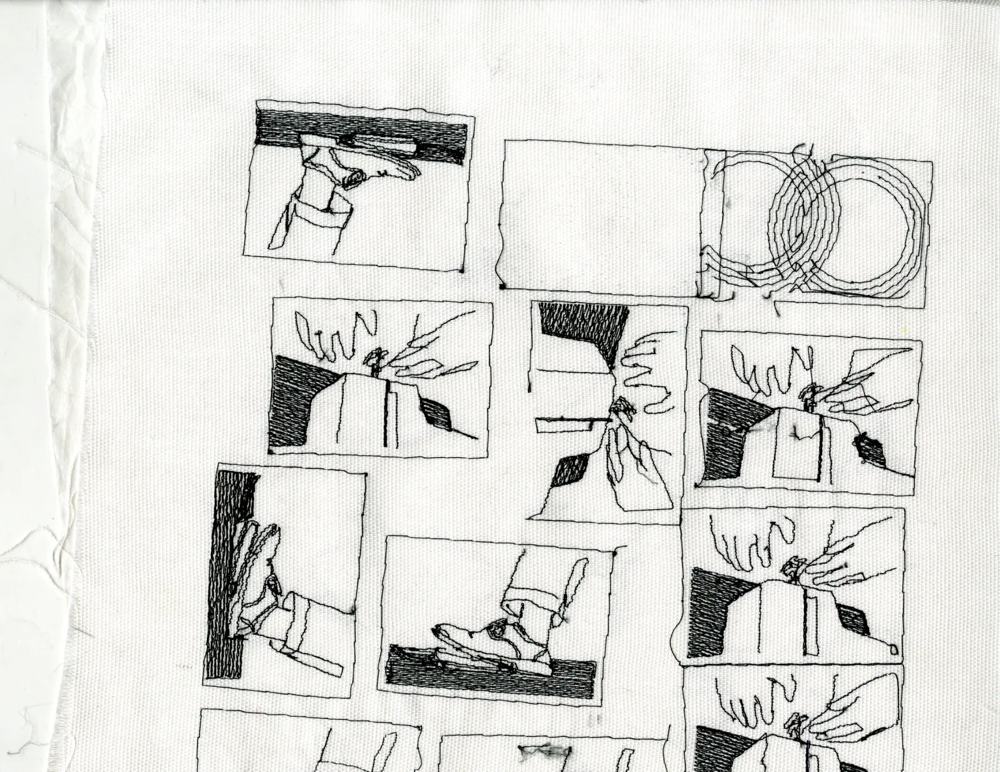

The reason I've been drawn to textile animations is because of the tactility you get from close ups on the weaving and thread. It makes the things feel a little more precious.
These animations are a part of the same world as the Textile Herbarium project. I've been curious about exploring sculpture with free standing lace or embroidery, or getting access to to a knitting, weaving or beading equipment. I have to think about machinery and printing techniques so much for this project because of the scale of animation. This project progresses whenever I can figure out a new way to print (with) fabric.
The Bird's Landing and Sewing/Driving (Music Visualizer) videos are on YouTube.
   